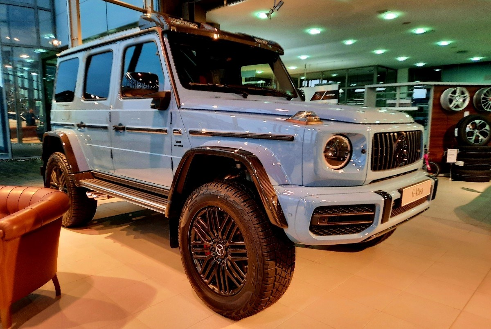
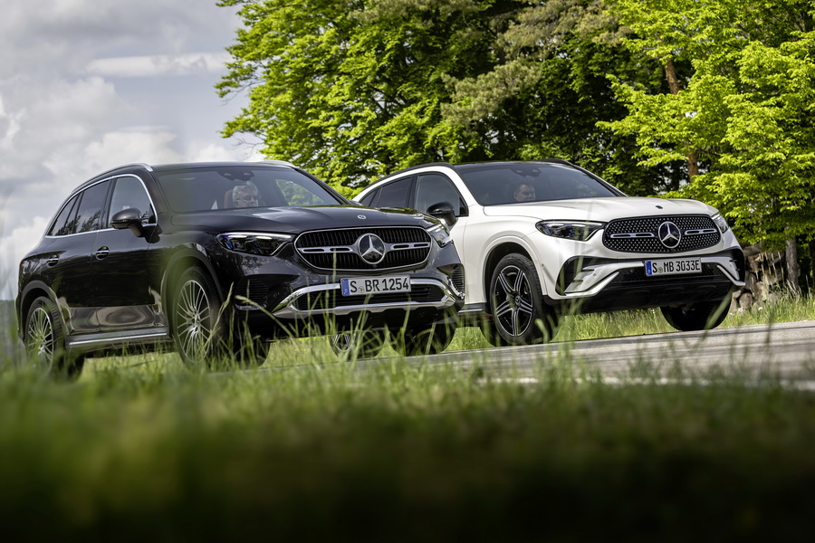
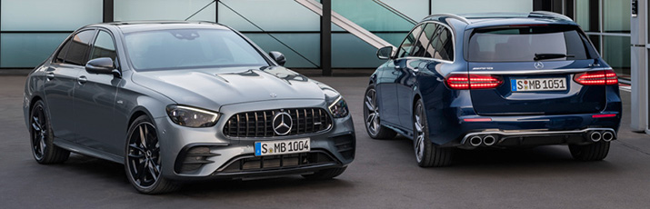
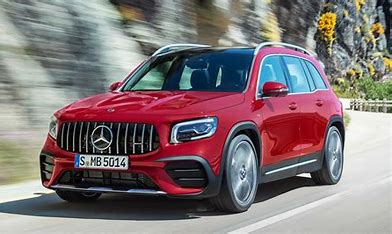
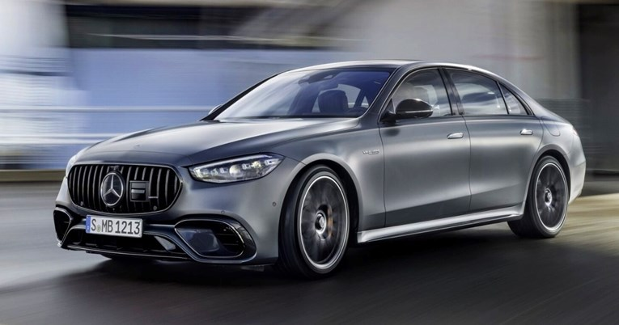

Novosti

U Hrvatskoj se prodaje najskuplji Mercedes na svijetu
Netko će se počastiti najbrutalnijim terencem koji Mercedes trenutno ima u ponudi.Oni bolje upućeni sjetit će se produžene G klase s tri osovine. Mercedesa 6x6 G63 AMG smo proglasili zvijeri nad zvijerima, a ostavio je dojmljiv i filmski debi kad se za upravljačem našao Michael Douglas. Sad takvom monstrumu maknite jednu osovinu i vratite ga na "kompaktnije“ mjere i dobit ćete verziju 4×4².
Utorak, 3.1.2023.

Novi Mercedes-Benz GLC: Više luksuza i samo 4-cilindrični hibridi
To je klasični SUV D segmenta, baziran na novoj generaciji C-Klase, s kojim Mercedes radi odličan posao. Upravo je to u posljednje dvije godine bio najprodavaniji Mercedes ikada, unatoč tome što mu se bližio kraj karijere. Sada je tu nova, sada treća generacija (ako uračunamo GLK koji se proizvodio od 2008. do 2015.). I očekivano, malo se toga promijenilo u receptu za uspjeh.
Četvrtak, 5.1.2023.

Nova Mercedes-Benz E-klasa: Inteligencija postaje uzbudljiva
Nova E-klasa ima dinamičniji dizajn, a linija Avantgarde predstavlja novu osnovnu specifikaciju vanjštine. Redizajnirana prednja i stražnja svjetla kao i redizajnirana maska hladnjaka i prednji branik, neke su od ključnih stavki vanjštine nove E-klase, dok je All-Terrain izvedba sličnija SUV modelima.
Nedjelja, 8.1.2023.

Ekskluzivno: Novi Mercedes-Benz GLB stigao u Hrvatsku, poznate i cijene za obiteljski multipraktik
U pogledu izvedbi, ni tu Mercedes-Benz nije ostavio malo prostora. Dizelske inačice zasupljene kroz GLB 180d, GLB 200d i GLB 220d (116, 150 i 190 KS) i pri tome svi dolaze s automatskim mjenjačem. Najsnažnija izvdeba u opciji nudi i pogon na sve kotače (4Matic). Cijena za GLB 180d počinje od 281.858 kuna, pa sve do 343.330 kuna za GLB 220d 4Matic.
Ponedeljak, 2.1.2023.

Najjača S klasa u povijesti
Imenom i prezimenom, to je Mercedes-AMG S63 Hybrid. Neka vas ime ne zavara, ovdje ispod poklopca nije četiri-cilindraš kao kod C63 AMG-a, ali nije ni V12. Tu je odlični 4.0 V8 biturbo koji je dovoljno dobar da pokreće i Aston Martine.
Srijeda, 28.12.2022.